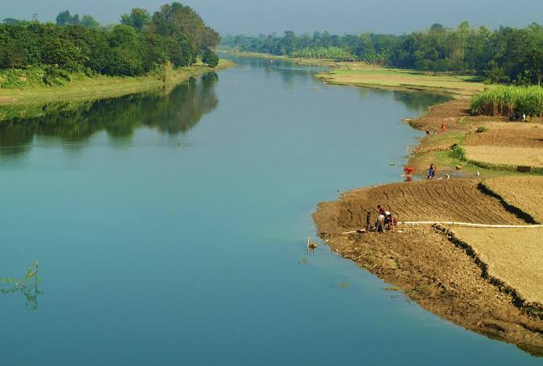
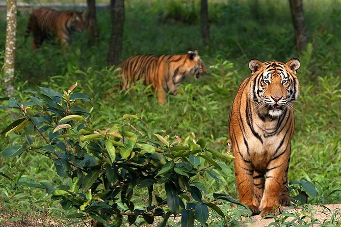

Explore some beautiful places and scenes from Bangladesh.
Bangladesh has many beautiful destinations, ranging from beaches and forests to rivers, hills and historical locations. Each region has its own unique landscape and cultural identity.
Photography is a wonderful way to capture the natural beauty and cultural diversity of Bangladesh. The following gallery presents several examples of places and scenes that visitors may enjoy exploring.

